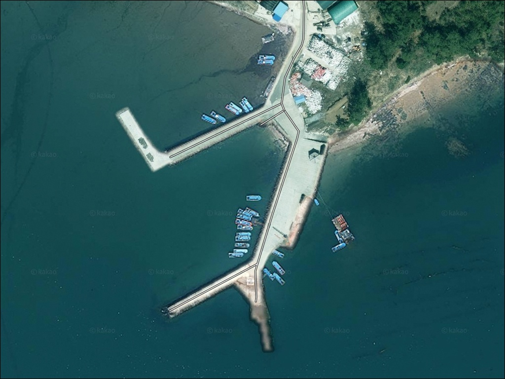
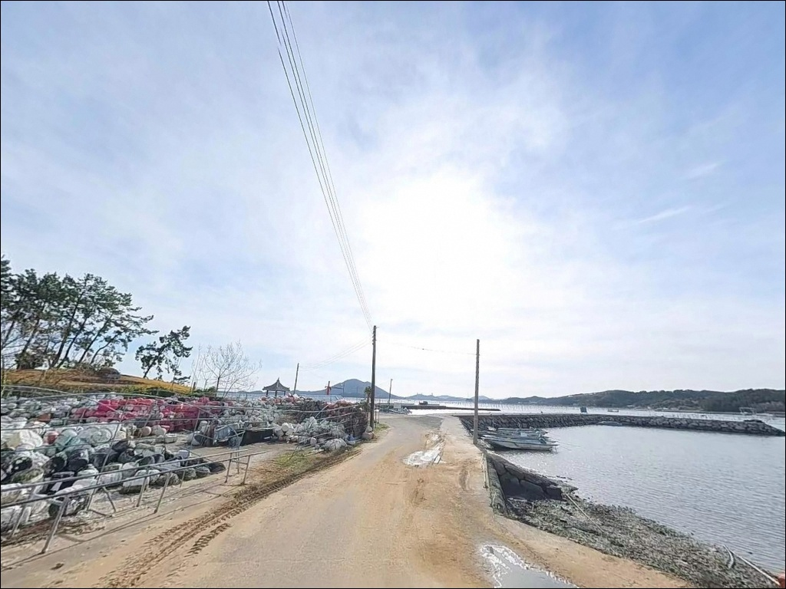
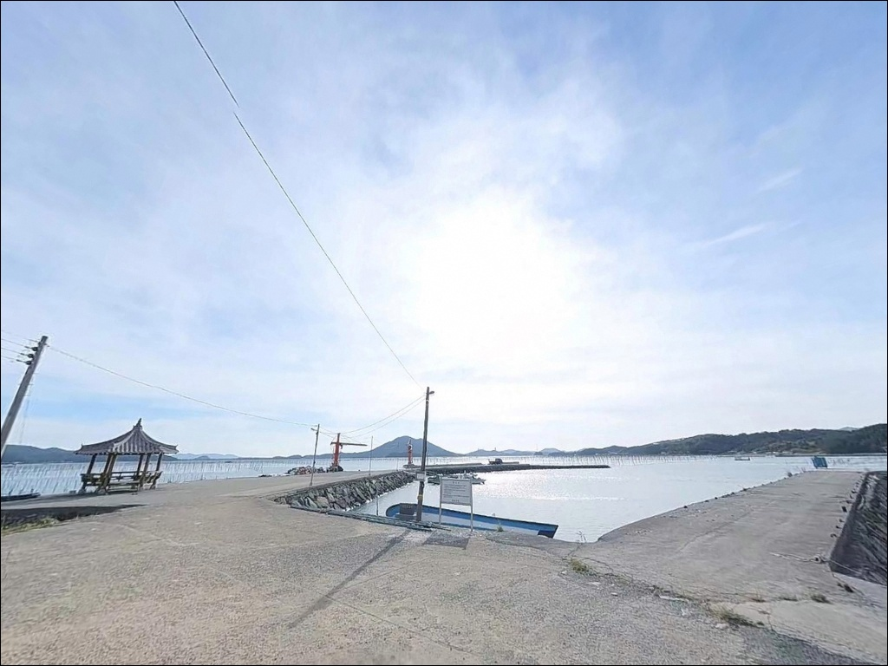
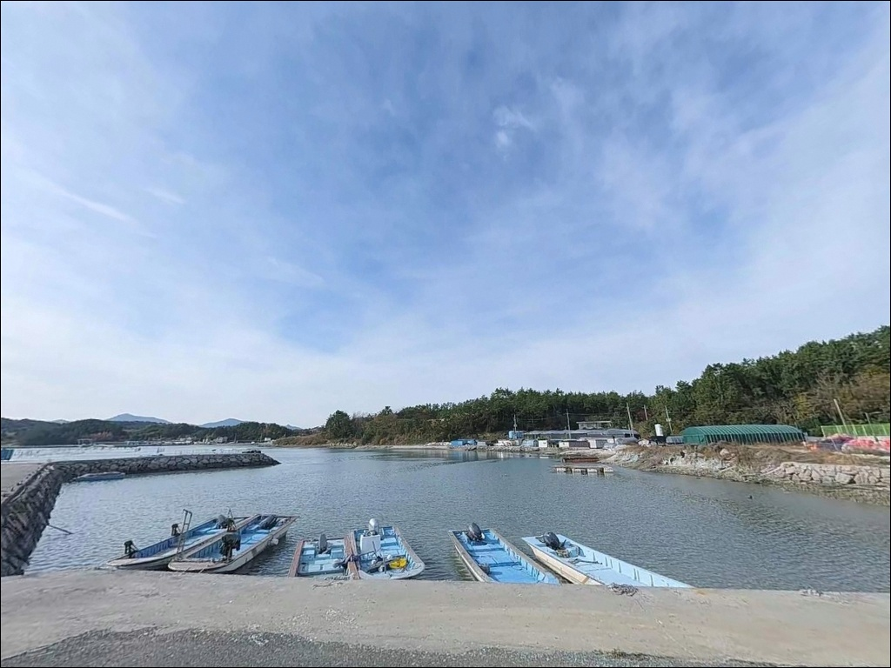
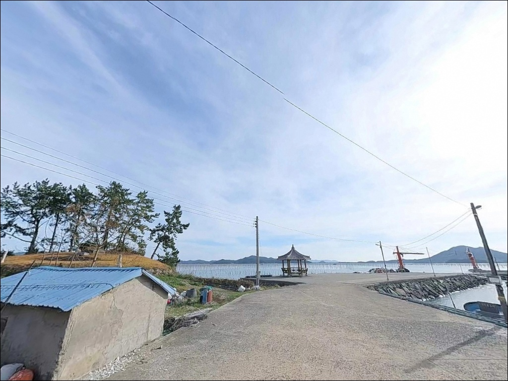
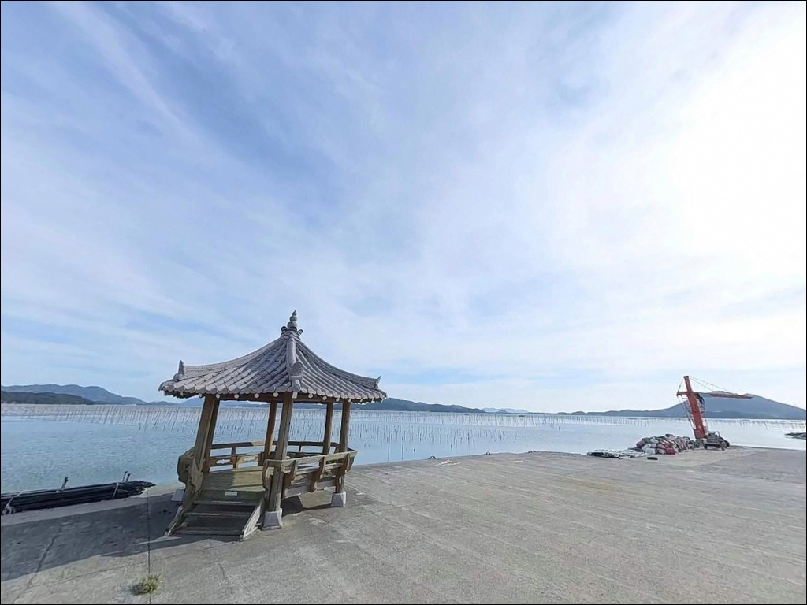
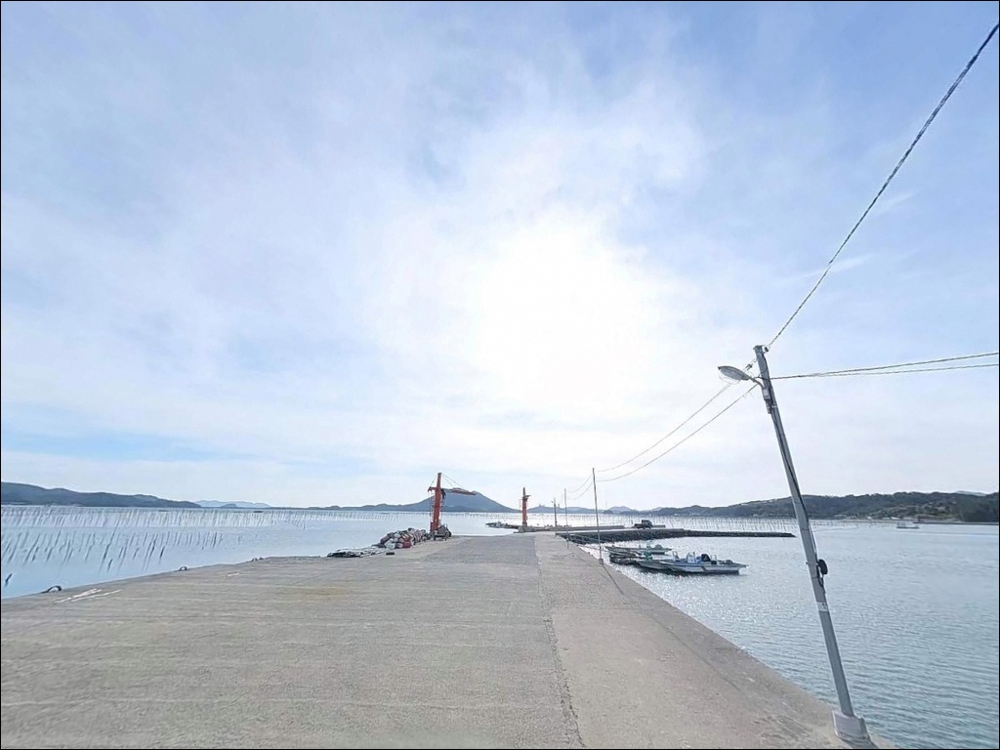
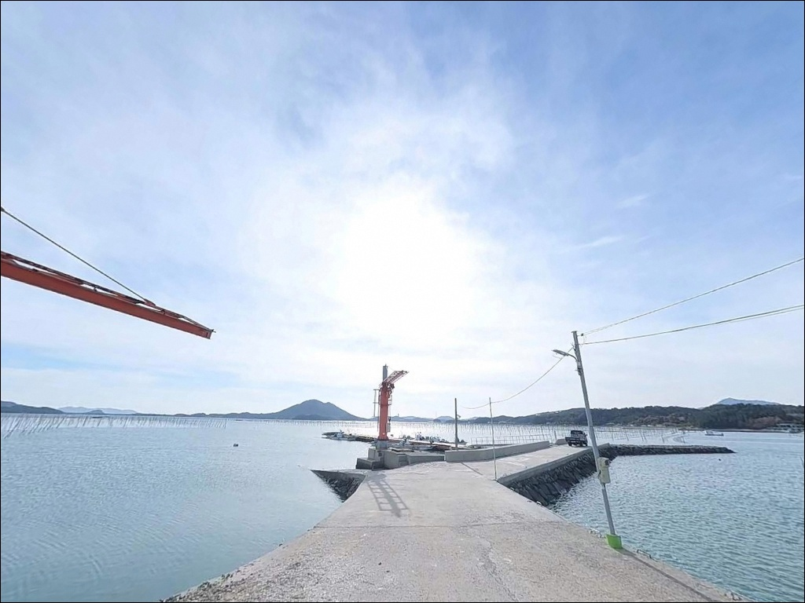
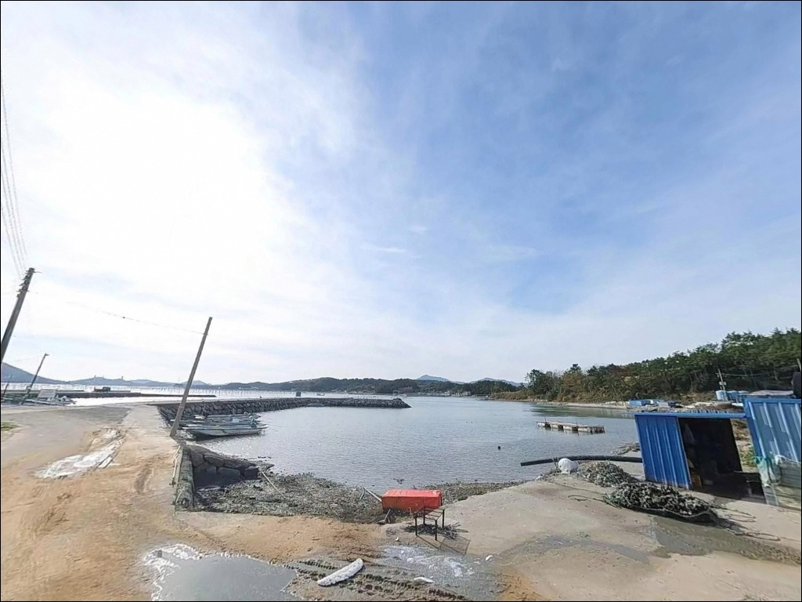

연동방파제, 고금도 전남 완도군 해안도로 코스 속 바다 차박 낚시 포인트
이 페이지에는 광고(제휴 링크 포함)가 있으며, 광고 링크를 통해 구매하면 운영자가 판매 수익 또는 수수료를 받을 수 있습니다. 포인트 사진: 카카오맵 스카이뷰·로드뷰. 이 페이지의 지도·사진 이미지는 카카오맵의 실제 서비스 이미지와 다를 수 있습니다.


포인트 안내
연동방파제
전남 완도군 고금면 농상리 775-18
강진만은 반폐쇄형 내만 구조라
외해처럼 조류가 세지 않습니다.
그 말은 물때를 모르고 들어가면
채비가 뜨거나 흘림이 살지 않아
낚시 자체가 밍밍하게 끝날 수 있다는 뜻이기도 합니다.
사리 전후 조류가 살아나는 타이밍을 맞추는 것이
이 포인트에서 가장 먼저 해야 할 판단입니다.
전남 완도군 고금면 농상리,
고금도 북동쪽 해안에 자리한 연동방파제는
강진만 내측을 향해 외항이 열려 있는
소형 어촌 방파제입니다.
온라인에 낚시 정보가 많지 않은 편이지만,
지형 구조 자체는 찌낚시·원투낚시·루어낚시를
고루 운용하기에 알맞은 조건을 갖추고 있습니다.
이 글은 연동방파제의
진입 동선, 차박 여건, 물때 판단 기준,
낚시 스타일별 공략 조건에 집중합니다.
조황 단정이나 특정 어종 보장은
이 글의 범위에 포함되지 않습니다.

1. 포인트 위치 및 진입 동선 분석
고금도는 장보고대교 개통 이후
신지도를 경유한 육로 접근이 가능한 섬입니다.
완도읍에서 출발하면 장보고대교를 넘어
고금면 소재지까지 닿을 수 있고,
농상리 해안까지는 포장 도로로 이어집니다.
비포장 구간 없이 차량이 방파제까지 진입할 수 있는 구조입니다.
진입로는 농어촌 어항 수준의 도로폭으로,
승용차와 소형 SUV 기준으로는 무리가 없습니다.
방파제 인근에 회차 공간이 마련되어 있어
후진 없이 돌아 나오는 것도 가능한 편입니다.
다만 대형 캠핑카나 긴 트레일러 차량은
진입 전 위성지도로 동선을 확인하는 것이 안전합니다.
주차는 방파제 진입부 공터를 중심으로
2~4대 규모를 수용할 수 있습니다.
도로변 갓길에도 여유 공간이 있으나
어선 출입 동선을 막지 않는 자리가 기본 원칙입니다.

2. 차박 환경 평가 및 야간 체류 여건
연동방파제 인근에서의 차박은
승용차 또는 소형 SUV 야박 수준으로 접근하는 것이 현실적입니다.
방파제 진입부 공터에 1~2대 정도의 차량이
체류할 수 있는 공간이 있고,
강진만 내만 구조 덕분에
외해 직접 노출 없이 비교적 잔잔한 환경이 유지됩니다.
농상리는 생활권 마을이라
완전한 고립감보다는
민가와 가까운 어촌 특성이 강합니다.
야간에도 민가 가로등이 부분적으로 살아 있어
완전한 암흑 환경은 아니지만,
방파제 끝단으로 갈수록 조명이 미치지 않으므로
개인 헤드랜턴은 필수입니다.
새벽에는 어선 출항 소음이 발생할 수 있습니다.


3. 주변 편의시설 및 인프라 현황
연동방파제 반경 3km 이내에
고금면 소재지가 위치합니다.
이 방향으로 이동하면 소규모 슈퍼마켓과
생필품 구매처를 이용할 수 있는 편입니다.
주유소도 고금면 내에서 확인이 가능합니다.
대형 프랜차이즈 편의점은
고금도 내에서 기대하기 어려운 편이므로
출발 전에 완도읍 또는 진입 전 거점에서
식수·얼음·소품을 미리 챙기는 것이 효율적입니다.
반경 10km권으로 이동하면
강진군 마량항 방면에서
편의점·낚시점·식당 등 인프라를 이용할 수 있습니다.
응급 상황 발생 시 종합병원급 의료시설은
완도읍 방면으로 이동해야 하므로
비상약품과 연료는 출발 전에 완비하는 것이 기본입니다.

4. 낚시 가기 전 반드시 확인해야 할 준비 항목
연동방파제 방문 전 가장 먼저 확인할 것은
물때입니다.
강진만은 반폐쇄형 내만 구조라
외해에 비해 조류가 완만한 편이지만,
사리 전후에는 만 내부 흐름이 살아나는 구간이 생깁니다.
바다타임에서 고금면 인근 기준 물때를 확인하고
초들물~중날물 타이밍을 노려 입장하는 것이
찌낚시와 원투낚시 모두에서 유리합니다.
기상청 해양 예보와 방파제 파고 예보도
출발 당일 다시 확인하는 것이 좋습니다.
강진만 내측이라 너울 영향은 제한적이지만,
강풍 경보 발효 시에는 즉시 철수 기준을 적용합니다.
외항 테트라포트 구간은 파도가 한 번만 타도 미끄러운 구조라
갯바위화를 착용하지 않은 상태에서의 이동은 위험합니다.
마을 어항 특성상
어선 이동 동선과 계류 어구에 접촉하지 않도록
자리를 잡는 것이 기본 매너입니다.
야간 낚시 시에는 헤드랜턴과 구명조끼를
반드시 갖춰야 합니다.

5. 강진만 내만이 만드는 낚시 조건 분석
연동방파제가 자리한 강진만은
반폐쇄형 내만 구조입니다.
이 구조가 외해의 너울과 강파로부터
방파제 낚시 여건을 차단해주는 역할을 합니다.
채비가 바람에 쏠리거나
너울에 흔들리는 상황이 적어
초행자도 안정적으로 채비를 운용할 수 있는 환경입니다.
방파제 외항은 테트라포트가 포설된 구간이 있으며,
끝단으로 갈수록 수심이 깊어지는 형태입니다.
외항 끝단 기준 수심은 3~6m 구간이며,
방파제 중간부 내항 쪽은 2~4m 수준으로 얕습니다.
테트라포트 경계 구간이 수심 급변 포인트가 되고,
이 자리에서 조류가 흐르는 시간대 찌낚시 반응이 살아납니다.
고금도와 약산도 사이 고금수도 방향의 조류 영향을
간접적으로 받는 구조라
사리 전후에는 내만에도 흐름이 형성됩니다.
정조 타이밍에는 원투 채비를 멀리 보낸 뒤
바닥 탐색이 효율적입니다.
출조 전 연동방파제 인근 조황은
고금면 방파제 낚시 또는 마량항 조황 키워드로
직접 검색해 확인하시기 바랍니다.


6. 연동방파제에 어울리는 낚시 스타일 제안
이 포인트에서 지형 조건과 가장 잘 맞는 방식은
찌낚시입니다.
강진만 내만의 완만한 조류는
전유동 또는 반유동 채비를 흘리기에 알맞은 속도이며,
외항 테트라포트 앞 수면이
주요 공략 구간입니다.
봄부터 가을까지 조류가 살아나는 물때를 맞추면
감성돔·숭어를 기대해볼 수 있는 지형 조건입니다.
원투낚시도 이 포인트 구조에 잘 어울립니다.
강진만 내만 사니질 바닥을 향해
외항에서 채비를 던져 넣는 방식으로 운용합니다.
정조 타이밍에 채비를 멀리 보내
바닥층을 천천히 탐색하면
붕장어·도다리 계열 어종이 기대되는 구간입니다.
루어와 에깅도 운용이 가능합니다.
외항 직벽과 테트라포트 경계 구간에서
볼락·노래미 등 락피쉬를 루어로 공략하거나,
완도군 해역 전반에서 시즌이 형성되는
갑오징어를 에깅으로 노려볼 수 있습니다.
내항 석축 구간은 민장대·릴낚시로 가볍게 즐기기 좋은 발판으로,
가족 단위 출조에도 부담 없는 구조입니다.

7. 대안 포인트 및 플랜 B 동선
연동방파제에서 조류가 기대에 못 미치거나
주차 공간이 여의치 않을 때
가장 먼저 이동할 대안은
대곡방파제입니다.
약 1km 거리의 같은 고금도 해역에 위치하며,
지형과 어종 패턴이 유사하면서
주차 여건이 더 넓은 편입니다.
좀 더 활성화된 조황 정보를 원한다면
강진군 마량항 방파제를 목적지로 잡는 것이 낫습니다.
도로 거리 약 10km 수준이며,
강진만 입구에 위치해 조류 활성도가 연동방파제보다 높습니다.
감성돔·농어·갑오징어 등
이 일대 주요 어종 정보를
낚시 자료 검색 시 마량항 조황을 먼저 확인하는 방식으로
활용하면 효율적입니다.
고금도 서쪽의 항동방조제 인근도
원투낚시 가능 구조가 있어
하루 동선을 길게 잡을 때
함께 묶어볼 수 있는 대안 포인트입니다.

강진만 내만 구조를 이해하면
연동방파제가 달라 보입니다
찌낚시와 원투낚시를 중심으로
조용히 낚시를 즐기는 낚시인이라면
연동방파제의 강진만 내만 구조는
채비 안정성 면에서 잘 맞는 조건입니다.
온라인 정보가 많지 않아
먼저 발품을 팔아야 하는 탐방형 포인트이기도 합니다.
루어나 에깅을 병행하고 싶은 낚시인에게도
외항 테트라포트 구간과 내항 석축 발판이
고루 갖춰진 구조입니다.
다만 물때 확인 없이 찾아가면
조류가 죽어 있는 시간대를 고스란히 맞닥뜨릴 수 있습니다.
사리 전후 타이밍을 기준으로 출발 시각을 잡고,
편의시설이 없는 환경임을 감안해
물때 확인, 자급 준비, 대형 차량 진입로 점검,
이 세 가지를 갖추고 간다면
기억에 남는 포인트가 될 수 있는 곳입니다.
강진만 내만 어촌 마을 옆에 차를 세우고
잔잔한 만 수면을 바라보며
하룻밤 머무는 차박 여행자라면,
새벽 어선 출항 전까지의 조용한 시간이
낚시와 야박을 동시에 즐기기 충분한 출조가 될 것입니다.